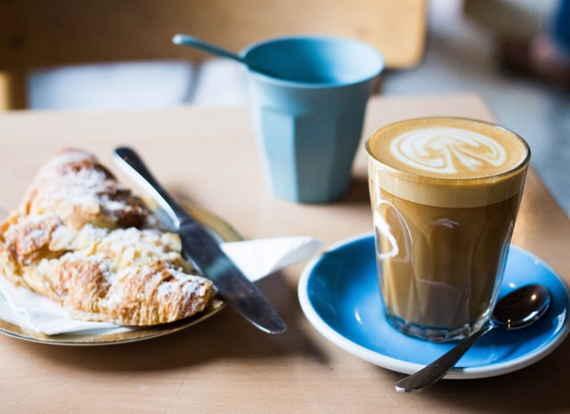
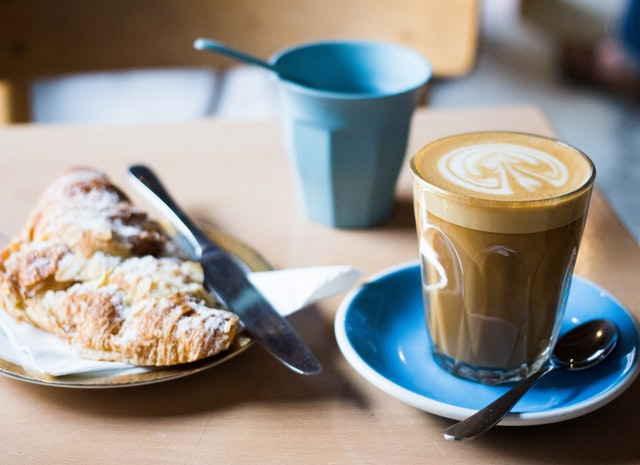
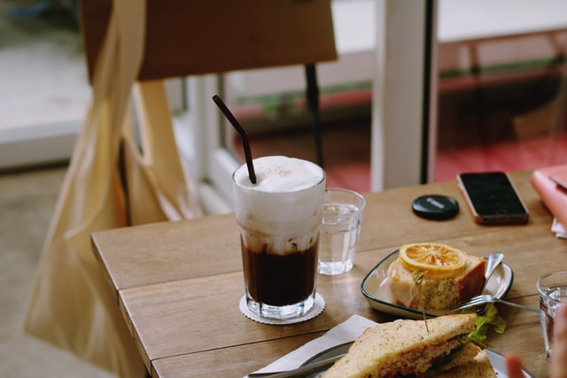
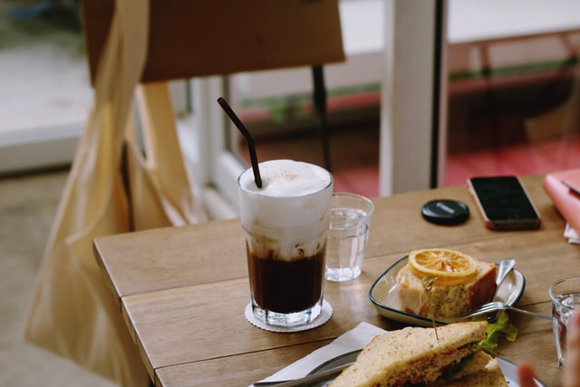
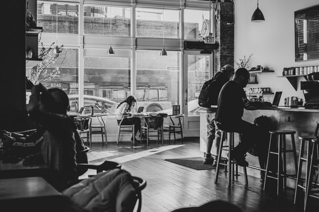
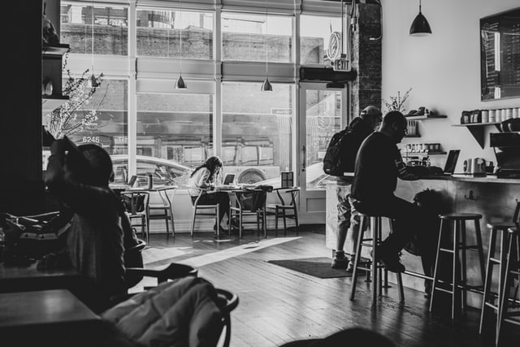

Kávé. Kultúra. Közösség.
Rólunk

A Kultcafe 2010 decembere óta várja vendégeit Buda szívében, a Móricz Zsigmond tér közelében.
Kávéinkat helyben pörköljük – így italaink mindig frissek és ízletesek. Sőt, ha valaki az élményt otthon is megismételné, frissen pörkölt kávéinkat kimérve is áruljuk.
Vendégeink több mint 30 féle kávéitalból válogathatnak, melyek a világ nagy kávétermő területeiről származó (Kenya, Ethiopia, Burundi, Java, Mexico, Columbia, Costa Rica, Guatemala, India…), kézzel szedett és válogatott, kiváló minőségű arabica kávékból készülnek.
A Kultcafe akár heti rendszerességgel ad otthont a különböző kulturális eseményeknek: irodalmi beszélgetőesteknek, felolvasóesteknek, borkóstolóknak, kiállításoknak. Legfőbb célunk az, hogy művészeti és kulturális elemeket felhasználva vendégeink számára változatos programokat biztosítsunk. Ezek az események elsősorban a szellemi feltöltődés jegyében telnek: ennek a legnagyobb pozitív hozadéka még is annak a közösségnek a létrejötte, amely hónapról-hónapra folyamatosan bővül.
Még nem ismert tehetségeknek, művészeknek pedig lehetőséget nyújtunk arra, hogy ingyenesen kiállíthassák alkotásaikat galériánkban. Ha szeretnél kiállítani nálunk, írj nekünk egy e-mailt az info@kultcafe.hu-ra, vagy keress fel minket személyesen a kávézóban!
Ha nálunk jársz, nézz szét a könyvespolcon! Tetszik valamelyik könyv? Ülj be hozzánk olvasni, vagy vidd haza, és hozz helyette egy másikat!
Galéria

 

 


 
